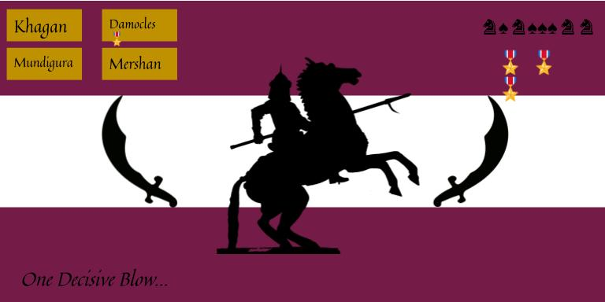
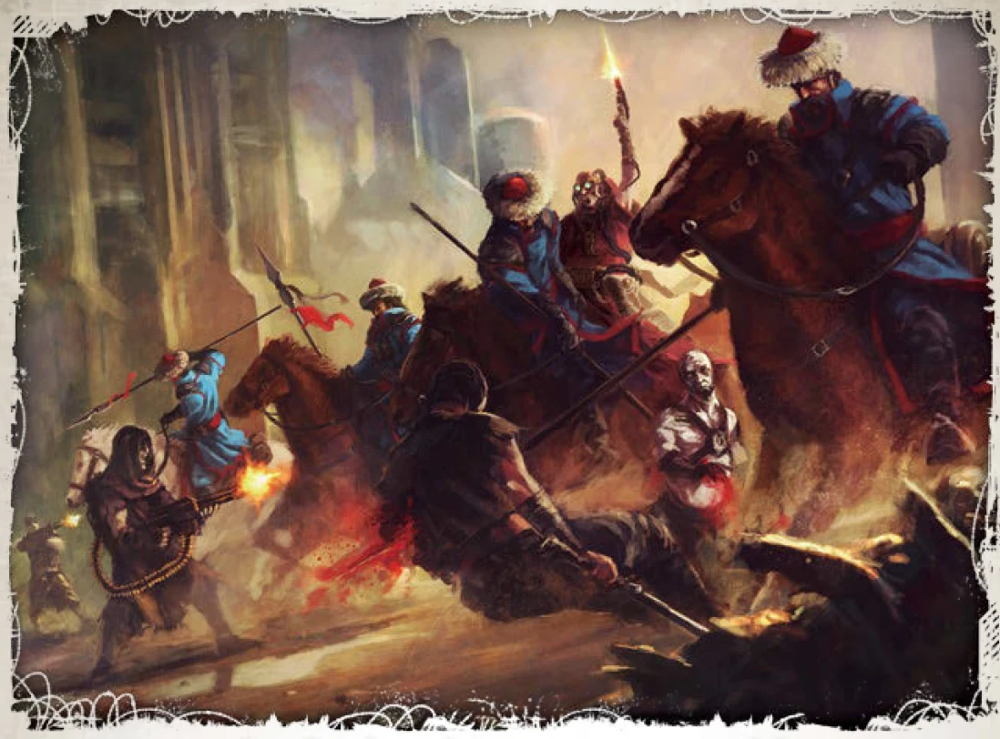

Hailing from the planet of Khagan the proud and noble Khagan Steppe Riders make war. Obsessed with artistry their weapons are often well maintained heirlooms passed down from generations. Khagan Steppe Riders are masters of beast riding and make great use of the plains and Savvannah like jungles of their homeworld. Fit to fight in any environment the Khagan Steppe Riders are skilled at hunting and thus make a direct counter to their contemporaries mentioned in the previous pages. The Khagan Steppe Riders are skilled at disarming and avoiding traps. Completely able to move silently and more importantly aware of their surroundings even amongst rainfall and the noise of the jungle, it is hard to catch them in an ambush.

The Khagan Steppe Riders desire a decisive fight as much as possible. To the point of outright refusing protracted engagements in exchange for carefully planned ambushes followed by decisive cavalry charges. This gives them an unforseen edge in urban and even open field combat that gave them the win in the early days of the Mundigura Jungle Wars- winning the first battle for the capital city. Fighting the Khagan Steppe Riders is like fighting a force of nature; an uphill struggle with the enviorments- always chasing the engagement on your terms and never getting it. Many traitor commanders have found themselves overcommitting into a charge just to be caught in a ambush and wiped out by the following cavalry charge.